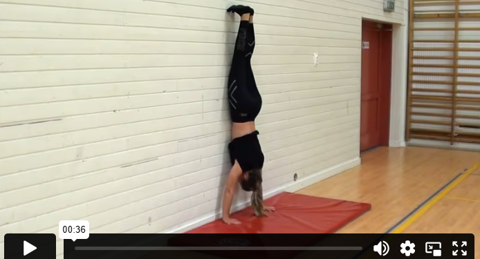
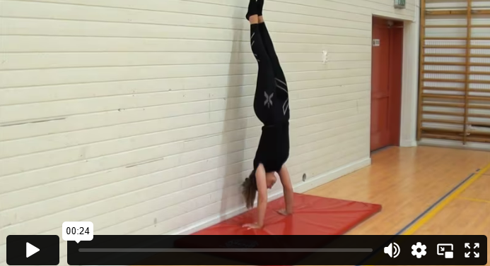
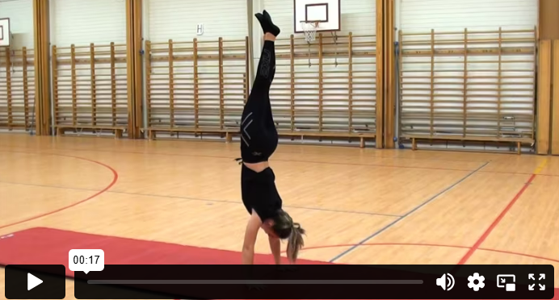
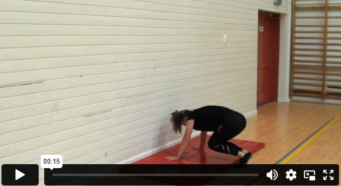

سجادة
الوقوف على اليدين – بناء سقف
عندما تبدأ التدريب على الوقوف على اليدين، من الأفضل أن تبدأ بالتمرين مع دعم. إحدى الطرق هي أن تستخدم قدميك لتتسلق وتصل إلى الوقوف على اليدين مقابل الحائط. من المفيد أن يكون لديك صديق يمسك ساقيك حتى لا تقع للخلف.
الوقوف على اليدين – مقابل الحائط
طريقة جيدة لتدريب الوقوف على اليدين هي أن تصعد إلى الحائط. عندما تكون واقفًا مقابل الحائط، يمكنك الدفع قليلًا ومحاولة إيجاد التوازن. شد جسمك، حافظ على نظرك نحو الأرض، واستخدم أصابعك للعمل على الحفاظ على التوازن.
الوقوف على اليدين – بدون دعم
عندما تتدرب على الوقوف على اليدين مقابل الحائط وتشعر بأنك بدأت تكتسب التوازن بشكل جيد، يمكنك الانتقال للتدريب على الوقوف على اليدين بدون دعم.
الصعود إلى الوقوف على اليدين بدفع مركز ومجمع
الطريقة الأكثر شيوعًا للصعود إلى الوقوف على اليدين هي بالدفع المتفرق، حيث تركل ساقًا واحدة في كل مرة. إذا أردت تحديًا أكبر، يمكنك التدرب على الصعود بكلتا الساقين معًا – وهذا ما يُسمى بالدفع المجمّع.
الوقوف على اليدين – التدحرج للأسفل
عندما تصل إلى مرحلة تستطيع فيها الوقوف على يديك لبضع ثوانٍ، يمكنك تجربة النزول إلى شقلبة من وضع الوقوف على اليدين. هذا يُسمى التدحرج للأسفل من الوقوف على اليدين. إذا شعرت بالخوف، يمكنك أن تبدأ بالتدريب على حصيرة سميكة. ابحث عن توازنك أثناء الوقوف على اليدين – اثنِ ذقنك نحو صدرك وادحرج إلى شقلبة.